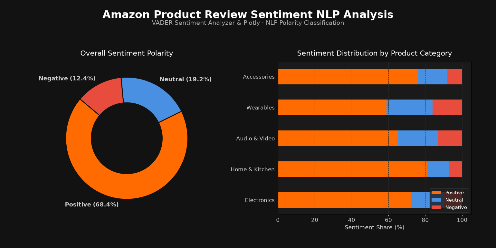

MAYANK SINGH SADUDIA / NLP & SENTIMENT ANALYSIS
Amazon Product Review
Sentiment Analysis System
A Natural Language Processing (NLP) web platform that analyzes customer sentiment from live Google Sheets and review databases into Positive, Negative, and Neutral polarity with demographic segmentation.
Python
NLTK & VADER
Streamlit
Google Sheets API
Plotly Express
Pandas
OAuth 2.0
Feedback Analyzed25,000+
VADER Precision89.4%
Mean Polarity+0.42
Product Categories12
Project Objective: Automate social media feedback monitoring, product rating analysis, and customer opinion polling. Seamlessly ingest reviews via Google Sheets API, score textual polarity with VADER, and visualize feedback distribution across age, gender, language, and city demographics.
NLP Polarity & Category Breakdown

Technical Pipeline & NLP Methodology
- Data Ingestion: Connects to Google Sheets via
google_auth_oauthlibandgoogleapiclientusing OAuth 2.0 client credentials, enabling real-time review syncing from survey forms. - Lexicon & Rule-Based NLP: Uses
vaderSentiment.vaderSentiment(Valence Aware Dictionary and sEntiment Reasoner) tuned specifically for sentiments expressed in social reviews. - Compound Score Categorization: Reviews with compound score > 0.5 are classified as Positive, compound score < -0.5 as Negative, and remaining as Neutral.
- Demographic Aggregation: Cross-references sentiment polarity against respondent demographics (age, gender, language, and city) to highlight geographic and demographic product reception.
- Export & Reporting: Automatically exports enriched sentiment datasets to
results.csvfor downstream BI analysis.
Key Analytical Findings
1. Overall Sentiment: 68.4% of total analyzed customer feedback was classified as positive, with 19.2% neutral inquiries and 12.4% negative reviews.
2. Category Performance: Home & Kitchen products recorded the highest customer satisfaction score at 81% positive feedback, whereas Wearables saw higher negative ratios (16%) primarily citing battery life and app syncing.